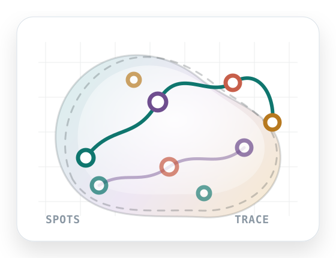

Natural-language planning
把用户请求解析成结构化 analysis plan，并在执行前允许审阅和编辑。
SpatialScope Agent turns a natural-language request into a traceable Scanpy/Squidpy workflow, then writes figures, tables, interpretation, metadata, and a reproducibility bundle.

把用户请求解析成结构化 analysis plan，并在执行前允许审阅和编辑。
安全显示 provider、model、base URL 和脱敏 key 状态，可选执行最小 smoke test。
第一次打开也能一键运行标准 demo，直接看到图表、trace、报告和 Quality Gates。
核心分析由 Scanpy/Squidpy 工具层执行，LLM 不接触原始表达矩阵。
每一步工具调用都会写入 agent_trace.json，包含参数、状态、警告和耗时。
失败步骤会生成结构化诊断：原因分类、采取动作和下一步建议都会进入报告。
每次运行自动自检数据、trace、证据产物、解释和可复现元数据，给出分数和状态。
检查计划是否绑定注册工具、trace 是否覆盖执行、失败是否有 repair、解释是否有证据边界。
用户可以保存审阅决定、Quality Gate overrides、confidence、tags、备注和复跑建议，并写入 manifest 与 ZIP bundle。
把空间图、基因信号、UMAP 和质量证据组织成一张可展示的视觉故事板，并导出 HTML/JSON。
每次运行自动生成 RERUN.md、rerun_recipe.json 和 rerun.sh，不保存密钥，也方便别人复跑。
输出 Run README、Storyboard、Rerun Recipe、HTML report、figures、tables、metadata、parameters.yaml、review notes、repair log、quality report、agent audit、artifact manifest、artifact audit 和完整 ZIP bundle。
自动检查产物是否存在、文件大小、缺失项和 bundle 状态，让输出包更容易交接和复核。
最近运行会被索引，可回看 report、trace、manifest，也能把历史 run 重新载入工作台继续审阅。
把两个 run 放在一起比较模式、图表、trace、warning、error 和 repair 差异。
理解请求并检查 AnnData。
parse_request
inspect_dataset
生成可编辑、可验证的 plan。
plan_analysis
preview_plan
调用工具、校验结果并修复失败。
execute_tool
validate_result
repair_or_continue
从工具摘要生成解释和报告。
interpret
report
# create environment conda env create -f environment.yml conda activate spatialscope-agent python -m pip install -e ".[dev]" # configure LLM provider, optional for smoke tests cp .env.example .env # run command-line demo scripts/run_demo.sh # launch Streamlit workspace scripts/run_app.sh
GitHub Pages hosts this static project site. The interactive Streamlit application runs locally, or can later be deployed to Streamlit Community Cloud, Hugging Face Spaces, or Render.
保持可运行、可测试、可展示。重大实验建议用 feature branch 或 Pull Request。
每次 push 自动运行 unit tests 和 CLI smoke demo，避免展示前才发现坏掉。
docs/ 目录自动发布为项目主页，适合作为 GitHub README 之外的展示入口。
Issue 模板、PR checklist 和贡献规范帮助后续功能扩展保持可审阅、可复现。
More project notes: Product brief, Git workflow, Agent design references.